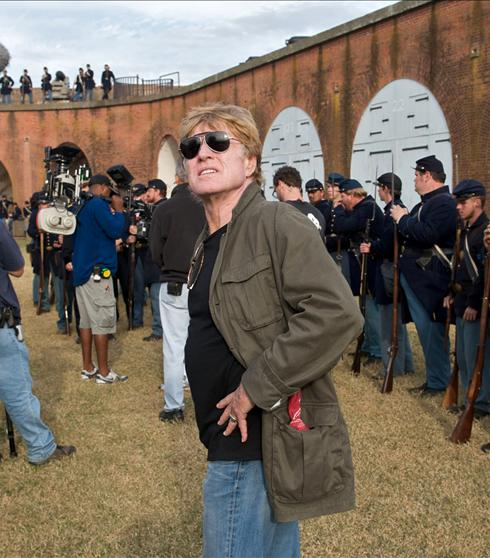
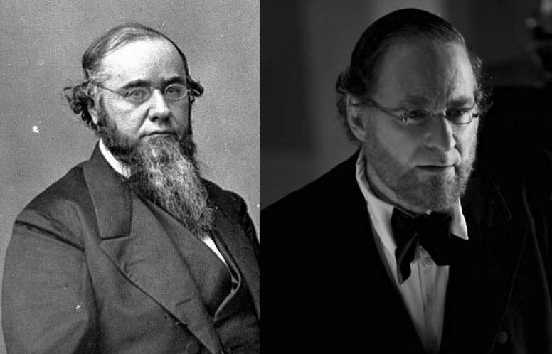
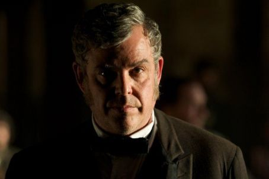

|
Well, I've just seen the new Robert Redford film, The Conspirator, and I'd like to
offer some comments based on my knowledge of the historical events that the film depicts.
I should begin by noting that in 2008, like a number of other historians of the Lincoln
assassination and its aftermath, I was asked by the American Film Company to read and
|

Robert Redford on the set of The Conspirator
|
critique the script. As it turns out, I had a number of strong criticisms, some of which
had to do with specific details.
For example, in the script, prosecutor Joseph Holt was identified as the "chief
adjutant general" of the U. S. army rather than, properly, as the army's judge advocate
general, head of the War Department's Bureau of Military Justice, and the preeminent
arbiter of military law during the war (and after, until his retirement in 1875). Others
of my criticisms of the script were more significant, having to do with the tone of the
script and its apparent message. In my opinion, the original script rather bluntly--one
might even say recklessly--attempted to portray Mary Surratt as the innocent, motherly
representative of the poor, vanquished Confederacy, and the federal
government--particularly through the characters of Edwin Stanton and Joseph Holt--as the
purely vengeful, bullying victor, determined, for whatever reason, to continue punishing
its now helpless and compliant former enemy. I expressed these criticisms as
diplomatically as possible to the film company. They thanked me, and that was the end of
my contact with them.
Having now seen the film twice (once on DVD, during which I stopped it every few
minutes to take notes, and once straight through with an audience in a local theater), I
can happily report that some of the details that were simply wrong in the script have been
righted: Holt, for example, now appears as the judge advocate general; numerous other
similar errors of detail are also no longer in evidence. Moreover, certain silly and even
offensive portions of the original script have been removed entirely, such as a scene in
which Mary Surratt seemed, bizarrely, to be trying to seduce Frederick Aiken in her cell!
But the film still has problems, some of which, it seems to me, remain in the realm of
not terribly significant historical detail, even if I personally found them annoying. For
example, Mary Todd Lincoln has to shoulder the blame for dragging President Lincoln to the
theater that night, though it is safe to assume that he made the decision himself (did you
catch that?).
Some problems are embarrassingly anachronistic. On this score, the most notable example
has to do with Holt's explanation to Stanton regarding the decision of five of the
military commissioners to recommend that Mary Surratt's death sentence be converted to
life in prison. In the film, instead of saying that the commissioners based their decision
on "her age and sex," which is how the actual commissioners put it, Danny Huston's Holt
says they were persuaded by her "age and gender." Once used only in relation to grammar,
the term "gender" was recast by feminist scholars in the late twentieth century to
|

Kevin Kline's Edwin M. Stanton looks quite different
from the genuine article.
|
distinguish between biological sex and the social construction of male/female identity. It
just makes no sense whatsoever for Holt, in 1865, to have used this term as a substitute
for "sex," and I frankly can't see why he was made to do so.
There are more troubling aspects of the film to think about, too, however: more
troubling because they seem designed intentionally to convey a distorted message about
this crucial event in American history. I'll mention two of them here (though my own list
is considerably longer). First, there is the whole issue of the film's emphasis on Mary
Surratt's separateness from the rest of the prisoners at the bar. Indeed, the film makes
it appear as if, although the other alleged conspirators were also present in the
courtroom, Mary Surratt was on trial by herself, when in fact all eight were tried
together. And in the actual trial she certainly was not seated separately at a table with
her own private lawyer (incidentally, she also did not lift her veil, speak, or have a
series of emotional outbursts such as we see in the film). Rather, she sat with the group
and was treated, for the most part, as one of them. That the film pictures the trial
differently is, I think, extremely important: I would argue that it becomes that much
harder for audiences to understand the weight of evidence that fell on all of the eight
collectively.
Moreover, the film suggests that Mary Surratt was set apart not just physically from
the seven unequivocally despicable male defendants, but also morally. In contrast with
them (and with the government's prosecutors), she appears as a noble woman driven only by
her maternal instincts to try and save her son. I don't buy it. I don't know if we'll ever
be able to determine how much Mary Surratt knew about either the kidnap plot or the
assassination plot. But I think the film has done audiences a disservice by casting her in
this light.
The other point I'll mention here has to do (not surprisingly, I'm sure) with the
film's depiction of Joseph Holt. Along with Kevin Kline's Edwin Stanton, Danny Huston's
Holt ends up playing a villain perhaps even more unsavory than John Wilkes Booth, who at
least gets credit for having a moral compass, even if one disagrees with his devotion to
the Confederacy. The fictionalized Holt, however, is caricatured as a grinning but
cynical, malevolent scoundrel. He not only has the commissioners (and all of the key)
witnesses in his pocket, but he also shapes the trial as he sees fit--justice be damned--for
no other reason than to inflict even more punishment on this broken-hearted representative
|

Danny Huston in The Conspirator
|
of the already subjugated South which, one is encouraged to assume, was eager for peace
and reconciliation with the North.
Now I would be the first to admit that Holt was a highly skilled and determined
prosecutor, and he certainly believed that all eight of the defendants were guilty and
hoped they would be convicted. I would even admit that during the real trial of the
assassins Holt willingly (and foolishly) made use of some corrupt witnesses, particularly
in his efforts to tie the assassination plot to Jefferson Davis. But to say these things
is quite different from saying that Holt fiendishly and singlehandedly (or even with
Stanton's help) manipulated the trial and its outcome to suit his own vengeful ends.
I suppose that if the purpose of The Conspirator is to encourage sympathy for the
defeated Confederacy in the face of the postwar North's unbounded rage, well, it makes
sense to portray Holt in this way. And if this is the case, then I think it's no
coincidence that Danny Huston's Holt sounds like he was born and raised in the North,
whereas the historical Holt was actually a native of the slaveholding South. There is no
doubt in my mind that the historical Holt's patterns of speech and his accent would have
reflected the fact that he lived the first fifty years of his life in Kentucky and
Mississippi.
But I can only presume that the filmmakers thought it would be simply too confusing for
their oversimplified story line to portray Holt as he really was--a Southerner and former
slaveholder who, at great personal cost, abandoned the South and slavery in order to
defend the nation, its president, and Lincoln's wartime policies (including emancipation)
against all of the enemies who were arrayed against them.
Source: Elizabeth Leonard, University of North Carolina Press (2010).
|